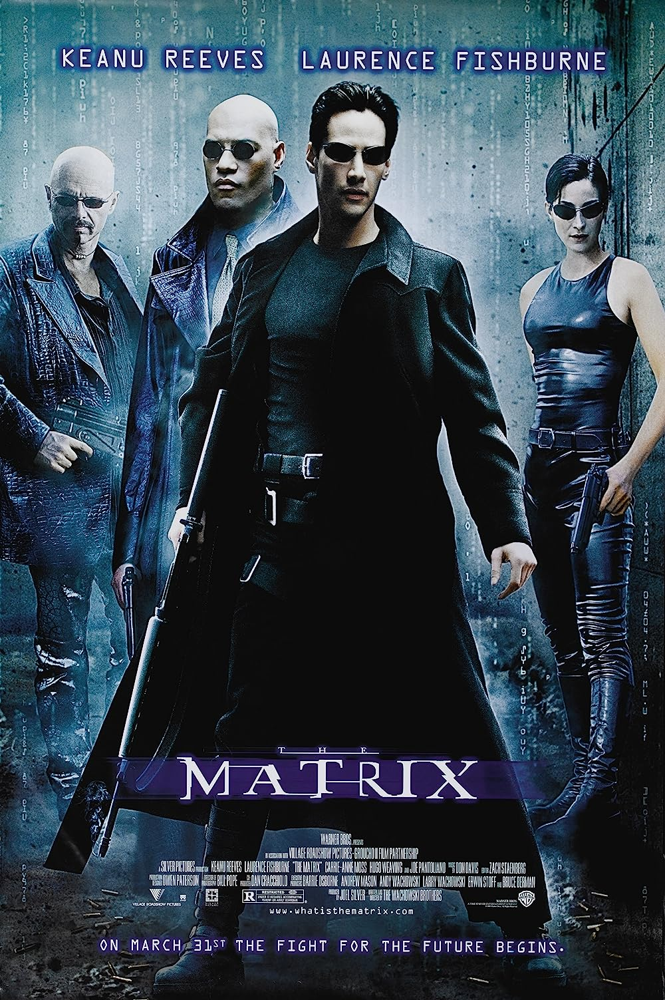
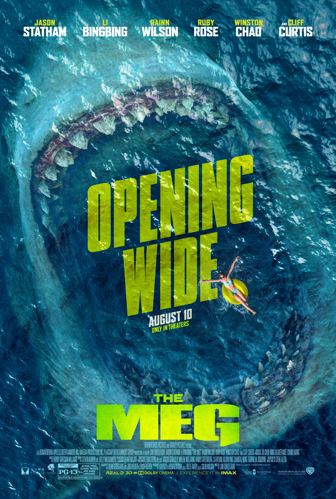

Amazing film for the first movie
The matrix is about when a coder finds a guy that says they are stuck in AI part
of the world and is acually trapped. They find him in real life and get him. This Movie has
actors Keanu Reeves, Carrie Anne Moss and Laurence Fishburne as the main chacters in the group.
Meglandon

Exexellent film for first one
When it first came out I was amazed by how good this movie was. The movie came out and
it was one of the best movies with actor jason statum and page kenndy. the movie was about a
Meglandon get to the surface and they warn people but they do not listen.
I hate reading books but these are my books to read
Refugee
The Phanton in the Tollboth
Thunder Rolling in the Mountains